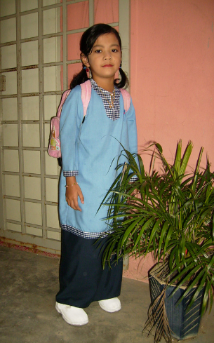
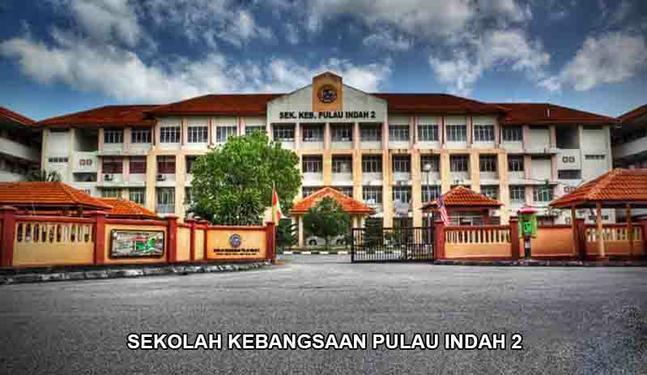
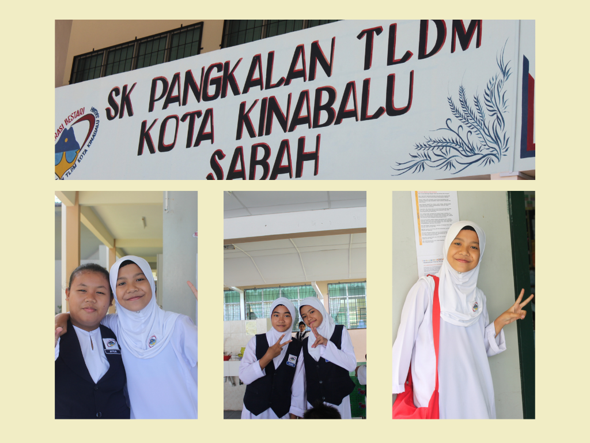
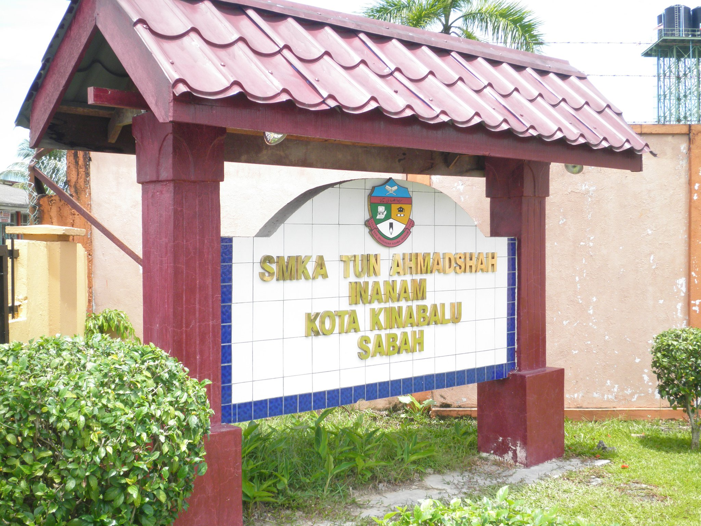
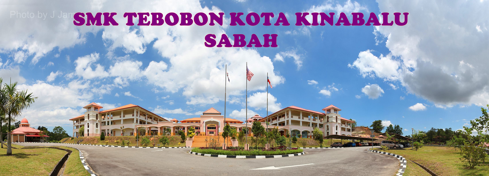
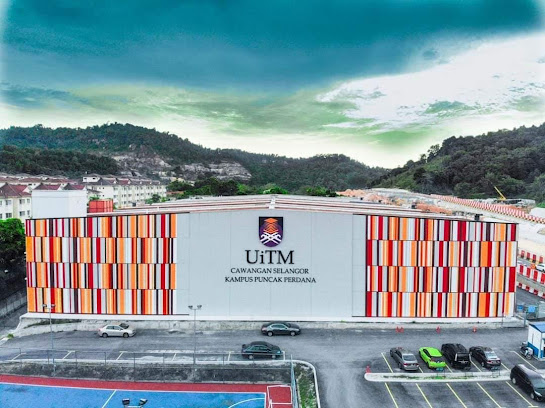

When I was five years old, I went to Tadika Idolaku kindergarten in Seri Manjung, which was close to my house. As far as I recall, the vibe there was always cheerful, and I met a lot of new friends. What's more, we're still friends to this day.

When I was six years old I am no longer school at the same kindegarten, I went to Tabika Kemas Baitul Balqis in Pulau Indah 2 Klang, Selangor, because my family and i moved from Perak due to my father's business.

After two years of kindergarten, I went to Sekolah Kebangsaan Pulau Indah 2 at the age of seven. My mother was a teacher at the school that year. I attended school there until I was in sixth grade..

Due to my father's business we moved to Sabah and I went to Sekolah Kebangsaan Pangkalan TLDM, Sepanggar at the age of twelve. I met many friends there and they all treated me well.

After finishing primary school, I attended a boarding religious school at Sekolah Menengah Kebangsaan Tun Ahmad Shah Inanam. I attended school for only three months and transferred to another school.

In 2013, I went to Sekolah Menengah Kebangsaan Tebobon, Menggatal, Sabah. In 2017, I finished my school here.
After graduating from high school, I pursued my education at UiTM Merbok in Kedah. I studied in Diploma of Information Management.

The end of my diploma in UiTM Merbok, Kedah. I continueing my degree at UiTM Puncak Perdana in Selangor. I studied in Bachelor of Information Science.
 HOME
PERSONAL DETAILS
SKILLS
EXPERIENCE
EDUCATION
CONTACT ME
HOME
PERSONAL DETAILS
SKILLS
EXPERIENCE
EDUCATION
CONTACT ME